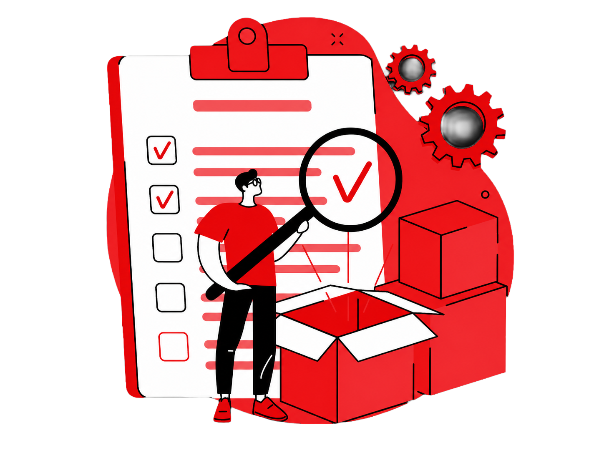
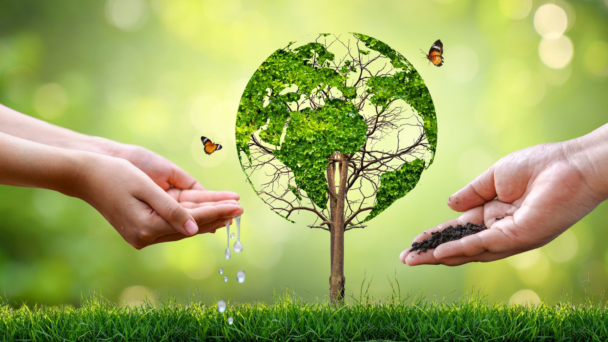

Yee Lim Adhesives Industries continuously strives to produce the best quality adhesives and to provide the best customer service to all our clients. Atop of the products and services we provide, the trust and satisfaction of our customers have always been the key driver to our success and a virtue we cherish. The faith in our products and our long-standing reputation constantly motivates us to be efficient and consistent in all our operations. Due to our strong and wide client base, we are always creating more and better tailored industrial uses of our adhesives.

Yee Lim Adhesives Industries further complements our products and manufacturing processes with environmental aspects. We take into considerations of the place we lived in, and to the people whom we loved. Proper housekeeping, strict procedures and controls are in place to prevent, if not mitigate the use of resources, waste generation and potential impact we had to our environment and health. Efforts from us to measure and improve the environmental impact could result in a better living environment for the current and future generations to come.